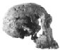
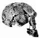

Arguments créationnistes : Homo habilis
Le habilis est-il un taxon invalide ?Récemment, l'argumentation créationniste habituelle concernant Homo habilis est qu'il s'agit d'un taxon invalide, c'est-à-dire que habilis n'est pas une espèce valide car tous ses spécimens appartiennent à d'autres espèces. Suivez ce lien pour une discussion de cette affirmation. |
Le crâne ER 1470 a été découvert en 1972, et présenté comme à la fois incroyablement humain et extrêmement ancien, datant d'environ 3 millions d'années. Les créationnistes ont avidement saisi la déclaration de Richard Leakey, son découvreur, selon laquelle 1470 « efface tout ce que nous avons appris sur l'évolution humaine [ce qui s'est avéré faux], et je n'ai rien à offrir à sa place ». Les créationnistes donnent parfois l'impression qu'il s'agit d'un crâne d'humain moderne. Mais malgré certains traits modernes, il présente de nombreuses caractéristiques australopithèques, et une taille cérébrale d'environ 750 cc (comparée à la moyenne de l'humain moderne d'au moins 1350 cc). Gish (1979) souligne sa petite taille, mais affirme que son âge et son sexe sont inconnus, cherchant probablement à suggérer qu'il pourrait appartenir à un enfant. Ce n'est pas probable, comme le montrent les photos comparatives (Weaver 1985). Le visage de 1470 est très robuste, et aussi grand que celui d'un crâne Cro-Magnon moderne, malgré une taille cérébrale beaucoup plus petite, et le crâne a une forme nettement différente. Il existe également d'autres preuves qu'il s'agissait d'un adulte.
Étonnamment, en tant que stratégie de débat pour discréditer d'autres fossiles d'hominidés, les créationnistes acceptent souvent 1470 comme humain, même si beaucoup d'entre eux rejettent les spécimens à cerveau plus grand erectus comme des singes. Mais si 1470 est humain, on pourrait alors faire un argument solide selon lequel le crâne très similaire mais plus petit ER 1813 est également humain. Les créationnistes, cependant, sont peu susceptibles de trouver l'idée d'un humain avec une taille de cerveau de 510 cc très attrayante.
En 1979, Gish a accepté provisoirement que le spécimen 1470 soit pleinement humain. D'ici 1985, il semblait avoir inversé cette opinion et suggérait qu'il devrait être classé dans le genre Australopithecus (comme l'ont fait certains scientifiques). Sa raison pour cela est qu'un autre fossile habilis (OH 8, un ensemble d'os du pied) avait été déclaré par Oxnard et Lisowski comme étant moins humain que précédemment pensé. Cela est utilisé pour justifier le placement de tous les fossiles habilis, y compris le 1470, parmi les australopithèques. Le pied OH 8, bien sûr, ne appartenait pas au 1470 et n'appartenait peut-être même pas à la même espèce, de sorte qu'il est sans pertinence pour déterminer le statut du 1470. Gish sous-entend que son évaluation antérieure du 1470 était basée sur des informations préliminaires, mais les photos et descriptions sur lesquelles Gish a basé son opinion antérieure ont été publiées dès 1973. Gish ne donne aucune nouvelle information sur le 1470 qui justifierait de le reclassement d'un humain à un singe.
Si 1470 était un singe, ce serait un singe vraiment extraordinaire. Le cerveau est beaucoup plus volumineux que celui de n'importe quel singe, avec la possible exception des mâles gorilles extrêmement grands. La boîte crânienne est beaucoup plus arrondie et gracieuse que celle de n'importe quel singe, et le cerveau présente un schéma humain plutôt qu'un schéma de singe (Tobias 1987).
Cronin et al. (1981) listent neuf caractéristiques de 1470 qui sont soit partagées avec A. africanus, soit intermédiaires entre africanus et d'autres spécimens de H. habilis. Gish cite certains de ces éléments pour étayer son affirmation selon laquelle 1470 est un australopithèque, mais, dans un bel exemple de citation sélective, il omet une autre section du même paragraphe listant d'autres caractéristiques de 1470 généralement associées au genre Homo. De même, Gish (1995) cite un passage de Bromage (1992) indiquant que le visage de 1470 aurait proéminé considérablement, comme celui d'un singe, mais ignore le paragraphe suivant, qui stipule « ... ER 1470 est Homo à bien des égards et il possède un cerveau phénoménal pour son époque ».
Lubenow (1992) fait exactement le contraire. Il cite un rapport paru dans Science News (18 nov. 1972) indiquant que le boîtier crânien de 1470 est remarquablement évocateur de l'homme moderne, mais ignore l'énoncé, paru quelques phrases plus tôt, selon lequel « Le crâne est différent de Homo sapiens, dit Leakey ... ».
Lubenow conclut que 1470 est pleinement humain. Ainsi, deux des principaux experts créationnistes en paléoanthropologie sont tous deux convaincus que 1470 n'est pas intermédiaire entre l'homme et le singe, pourtant l'un d'eux le considère comme un singe, et l'autre comme un humain ! Il n'y aurait pas de démonstration plus convaincante de son statut de fossile transitionnel.
Bien que 1470 soit généralement classé dans le genre Homo, il n'est certainement pas un humain moderne. Il existe de nombreuses preuves à l'appui de cela :
« La capacité endocrânienne et la morphologie du calvarium [boîte crânienne] sont des caractères qui suggèrent l'inclusion dans le genre Homo, mais la maxillaire [mâchoire supérieure] et la région faciale diffèrent de celles de toute forme hominidé connue. » (Leakey 1973)« D'après la taille du palais et l'expansion de la zone allouée aux racines des molaires, il semble que ER 1470 ait conservé un visage et une dentition entièrement de taille Australopithecus. » (Brace et al. 1979)
« KNM-ER 1470, comme d'autres spécimens précoces du genre Homo, présente de nombreuses caractéristiques morphologiques communes avec les australopithèques graciles qui ne sont pas partagées par les spécimens plus tardifs du genre Homo » (Cronin et al. 1981)
« Il n'existe aucune preuve que ce crâne ressemble particulièrement à H. sapiens ou à H. erectus selon les preuves phénétiques ou cladistiques. Phénétiquement, KNM-ER 1470 est le plus proche des restes d'Olduvai [considérés comme des singes par les créationnistes] attribués à H. habilis. » (Wood 1991)
« En ignorant la capacité crânienne, la forme globale du spécimen et ce visage énorme greffé sur la boîte crânienne étaient indéniablement australopithèques. » (Walker et Shipman 1996)
En fait, le visage et le palais de 1470 sont si grands que, tant que le crâne n'a pas été assemblé, Richard Leakey pensait, en se basant sur les os du visage, que 1470 était un australopithèque robuste (Walker et Shipman 1996).
À la lumière de ces différences, sur quelle preuve Lubenow affirme-t-il qu'il n'existe aucune raison morphologique convaincante pour ne pas attribuer ER 1470 à H. sapiens ? Aucune, apparemment. Cela semble être uniquement son propre avis, et n'est soutenu par aucun scientifique qualifié.
Peu après la découverte de 1470, l'anatomiste A. Cave a déclaré dans une interview qu'il s'agissait « d'un crâne typiquement humain, autant que je pouvais le voir » (Hillaby 1972). Les créationnistes interprètent cela comme signifiant qu'il s'agissait du crâne d'un humain moderne ; en fait, Bowden (1981) pense qu'il s'agit « probablement de la preuve la plus convaincante » de cela. Il est plus probable que Cave ait simplement indiqué que le crâne appartenait au genre Homo et présentait des caractéristiques typiques de celui-ci. Cependant, sans contexte supplémentaire, que Hillaby ne fournit pas, il est impossible de déterminer ce que Cave voulait dire. L'évaluation de Cave est survenue peu après la mise au jour de 1470 à Londres et reposait presque certainement sur un examen rapide du fossile plutôt que sur une étude détaillée.
Un autre fossile que Lubenow considère comme humain est ER 1590, composé de fragments crâniens et de dents d'un enfant d'environ 6 ans. Il n'est pas complet au point que la taille du cerveau puisse être mesurée directement, mais il semble être très proche en taille du 1470. Cependant, cet enfant avait des dents plus grandes que celles de Homo erectus, qui sont à leur tour plus grandes que celles de Homo sapiens. De plus, la séquence de développement dentaire ressemble peu à celle de Homo sapiens (Wood 1991).
Bien que Lubenow considère 1470 comme humain, il classerait les fossiles plus petits de habilis tels que OH 24, ER 1805 et ER 1813 parmi les australopithèques. Le plus grand de ces fossiles a une taille de cerveau d'environ 600 cc (1470 fait 750 cc), ce qui est à peine suffisant pour constituer « l'écart significatif » que Lubenow dit séparer les australopithèques des humains. Et Lubenow ne mentionne pas qu'il existe deux autres crânes de habilis (OH 13 (650 cc) et OH 7 (680 cc), aucun des deux n'étant adulte), qui tombent bien au milieu de cet écart.
Pour étayer sa thèse selon laquelle 1470 est humain et que les autres fossiles d'habilis sont des singes, Lubenow cite un article de Dean Falk (1983), qui indique que le moulage endocrânien de 1470 présente un patron humain, tandis que celui de 1805 est semblable à celui d'un singe (ce sont les seuls fossiles discutés par Falk). Cependant, Tobias (1987) montre que d'autres fossiles d'habilis tels que OH 7, OH 13, OH 16 et OH 24 (que les créationnistes considèrent comme des singes) partagent tous de nombreuses caractéristiques avancées avec ER 1470.
 
En fait, malgré sa taille cérébrale plus importante, Cronin et al. (1981) considèrent 1470 comme plus primitif, présentant davantage de caractéristiques australopithèques, que 1813. Les dents de 1470 (telles qu'inférées à partir des alvéoles) étaient de la taille des dents australopithèques, tandis que 1813 avait des dents plus petites, de la taille des dents du Homo erectus (Klein 1989). D'autres scientifiques (revus dans Wood 1992) considèrent que 1470 appartient à la même espèce que soit OH 7, soit 1813. OH 62 ressemble également étroitement à 1470 (Johanson et al. 1987). Trier les relations exactes de ces fossiles est très difficile, mais il est clair que tous sont assez similaires, avec un mélange de caractéristiques du Homo et de l'Australopithecus. Il n'existe aucune « lacune significative » séparant 1470 des autres.
L'écrivain anti-évolutionniste Richard Milton avance un argument différent contre la validité de H. habilis :
En effet, l'un des aspects ironiques de la découverte de Homo habilis est que, alors que les darwinistes concentrent leur attention sur l'interprétation des os des doigts et des vertèbres à la gorge d'Olduvai, en tentant d'établir les qualifications de la créature en tant que maillon manquant, ils semblent avoir négligé le fait qu'à seulement quelques centaines de miles à l'est, dans les forêts du Zaïre, vivent les peuples Mbuti, qui mesurent en moyenne quatre pieds six pouces de hauteur et qui, en termes de taille, de capacité cérébrale et même de mode de vie, sont comparables à Homo habilis. (Milton 1997)This is a startling claim, and would certainly be the death knell for habilis if it were true, but it isn't, and Milton offers no evidence or references to support it. He made the same claim in un débat par e-mail que j'ai eu avec lui in 1997/98, but again supplied no references, and refused to do so even though he was repeatedly asked for them.
L'affirmation de Milton est, en un mot, du non-sens. (Voir ma page tailles des cerveaux pour plus de détails)
Lectures connexes
Homo habilis : est-ce un taxon invalide ?Le problème des « ancêtres » non ancestraux, par Jim Moore (discute de l'argument créationniste courant selon lequel H. habilis n'est pas une espèce valide)
Voir également la section sur Homo habilis de la débat par email entre moi-même et Richard Milton.
Cette page fait partie de la FAQ sur les hominidés fossiles de l'Archive TalkOrigins.
Page d'accueil |
Espèces |
Fossiles |
Créationnisme |
Lecture |
Références
Illustrations |
Nouveautés |
Retour d'information |
Recherche |
Liens |
Fiction
http://www.talkorigins.org/faqs/homs/a_habilis.html, 08/31/02
Copyright © Jim Foley
|| Envoyez-moi un email